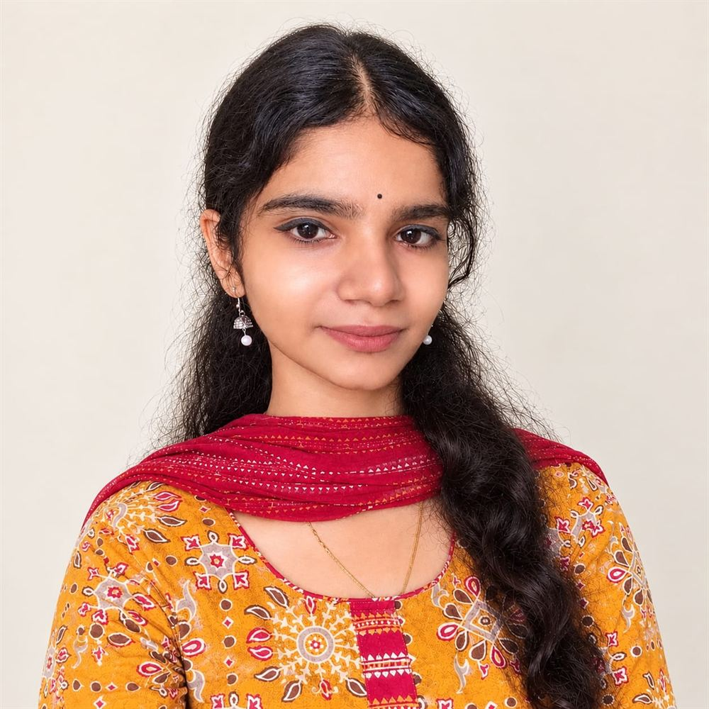

Open to entry-level and fresher roles
Sandhya R,
I build backend services and AI apps in Chennai with Python, FastAPI and PostgreSQL, and deploy them with Docker, CI/CD and AWS. Full-Stack Developer Intern at Finstein Advizory since July 2026.
- CGPA
- 8.26 of 10
- Graduating
- 2027
